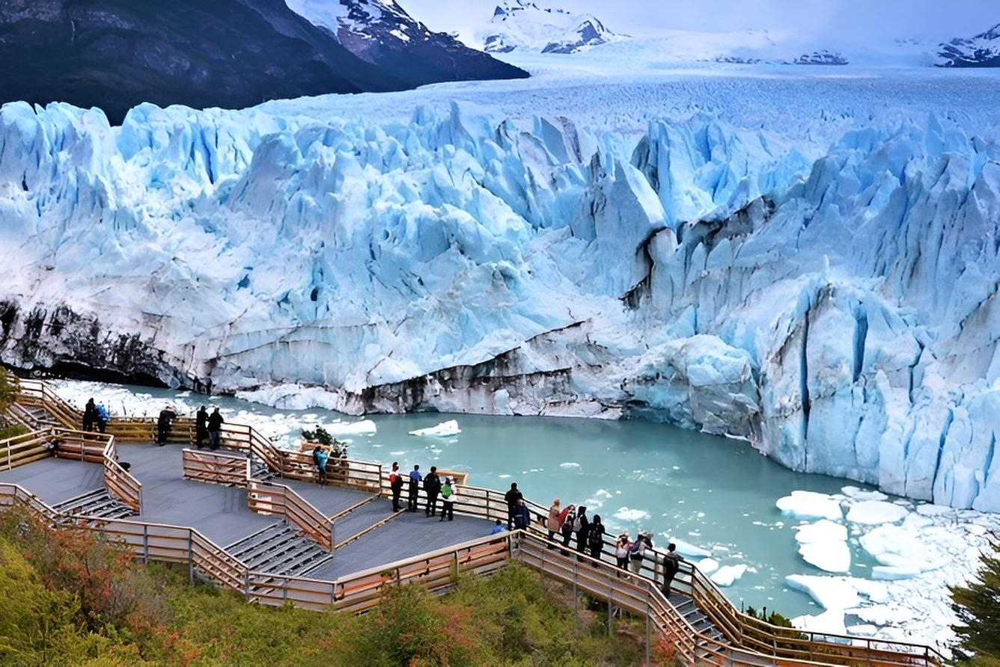

El Calafate y el Glaciar Perito Moreno
El Calafate es uno de esos lugares que parecen sacados de una postal. Ubicado en el sur de la Patagonia, este pequeño pueblo es la puerta de entrada al famoso Parque Nacional Los Glaciares, hogar del majestuoso Glaciar Perito Moreno. Verlo por primera vez es una experiencia que deja sin palabras: sus tonos celestes, el sonido del hielo rompiéndose y la inmensidad del paisaje crean una escena única.
Una de las cosas más sorprendentes del glaciar es su movimiento constante. Aunque no lo parezca, el hielo avanza lentamente, generando enormes desprendimientos que caen con estruendo al agua del Lago Argentino. Desde las pasarelas del parque se puede observar este espectáculo natural de cerca, o incluso hacer una navegación por el lago para verlo desde otra perspectiva.
Pero El Calafate no es solo el glaciar. En el pueblo hay muchas actividades para disfrutar: probar el licor de calafate (dicen que si lo tomás, volvés), recorrer las reservas naturales, visitar el Glaciarium o simplemente caminar por la costanera del lago viendo los flamencos. Es un destino que combina naturaleza, tranquilidad y aventura en partes iguales.
← Volver a Categorías